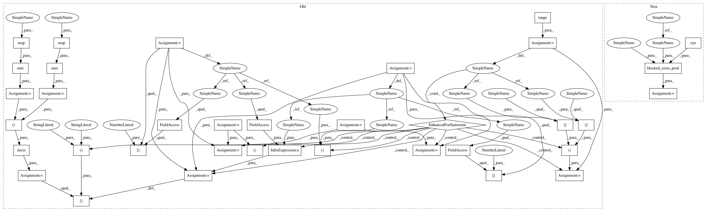

751ef43a9daa9fc32fabd121578a7033c33a80b5,linearmodels/system/covariance.py,GMMHomoskedasticCovariance,cov,#GMMHomoskedasticCovariance#,250
Before Change
x, z = self._x, self._z
k = len(x)
nobs = x[0].shape[0]
nvar = sum(map(lambda a: a.shape[1], x))
ninstr = sum(map(lambda a: a.shape[1], z))
xpz = zeros((nvar, ninstr))
n = m = 0
// TODO: Add blocked cross-product
for i in range(k):
_x, _z = x[i], z[i]
xpz[n:n + _x.shape[1], m:m + _z.shape[1]] = _x.T @ _z
n += _x.shape[1]
m += _z.shape[1]
xpz /= nobs
wi = inv(self._w)
xpz_wi_zpx = xpz @ wi @ xpz.T
After Change
x, z = self._x, self._z
k = len(x)
nobs = x[0].shape[0]
xpz = blocked_cross_prod(x, z, eye(k))
xpz /= nobs
wi = inv(self._w)
xpz_wi_zpx = xpz @ wi @ xpz.T
In pattern: SUPERPATTERN
Frequency: 3
Non-data size: 36
Instances
Project Name: bashtage/linearmodels
Commit Name: 751ef43a9daa9fc32fabd121578a7033c33a80b5
Time: 2017-11-27
Author: kevin.k.sheppard@gmail.com
File Name: linearmodels/system/covariance.py
Class Name: GMMHomoskedasticCovariance
Method Name: cov
Project Name: bashtage/linearmodels
Commit Name: 751ef43a9daa9fc32fabd121578a7033c33a80b5
Time: 2017-11-27
Author: kevin.k.sheppard@gmail.com
File Name: linearmodels/system/model.py
Class Name: IVSystemGMM
Method Name: _blocked_gmm
Project Name: bashtage/linearmodels
Commit Name: 751ef43a9daa9fc32fabd121578a7033c33a80b5
Time: 2017-11-27
Author: kevin.k.sheppard@gmail.com
File Name: linearmodels/system/covariance.py
Class Name: GMMHomoskedasticCovariance
Method Name: cov
Project Name: bashtage/linearmodels
Commit Name: 751ef43a9daa9fc32fabd121578a7033c33a80b5
Time: 2017-11-27
Author: kevin.k.sheppard@gmail.com
File Name: linearmodels/system/model.py
Class Name: IVSystemGMM
Method Name: fit